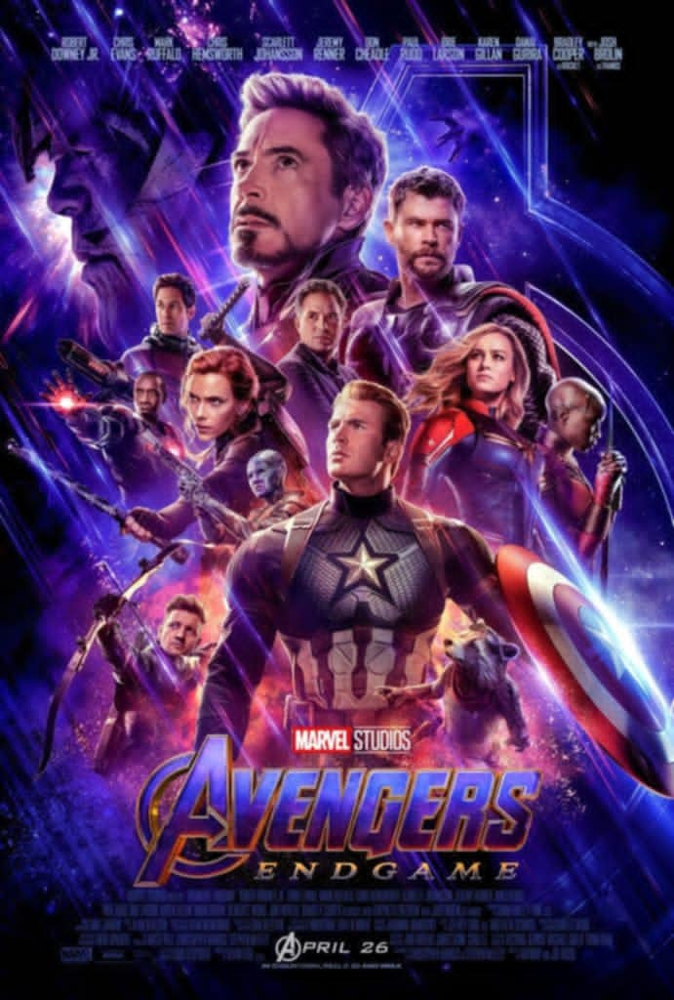

Favorite Movies
Harry Potter
Harry Potter is a series of seven fantasy novels written by British author J. K. Rowling. The novels chronicle the lives of a young wizard, Harry Potter, and his friends, Hermione Granger and Ron Weasley, all of whom are students at Hogwarts School of Witchcraft and Wizardry.

A series of unfortunate events
This series follows the tragic tale of three orphans -- Violet, Klaus, and Sunny Baudelaire -- who are investigating their parents' mysterious death. The siblings are saddled with an evil guardian named Count Olaf (portrayed by Emmy-winning actor Neil Patrick Harris), who will do whatever it takes to get his hands on the Baudelaires' inheritance.

Avengers: Endgame
AVENGERS: ENDGAME is set after Thanos' catastrophic use of the Infinity Stones randomly wiped out half of Earth's population in Avengers: Infinity War. Those left behind are desperate to do something -- anything -- to bring back their lost loved ones.
